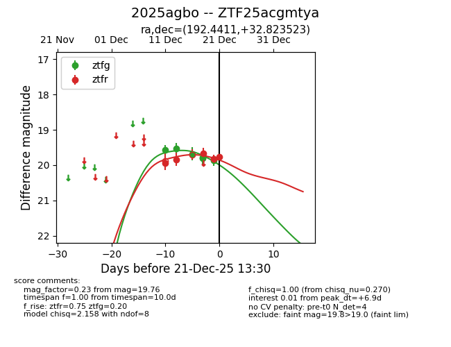
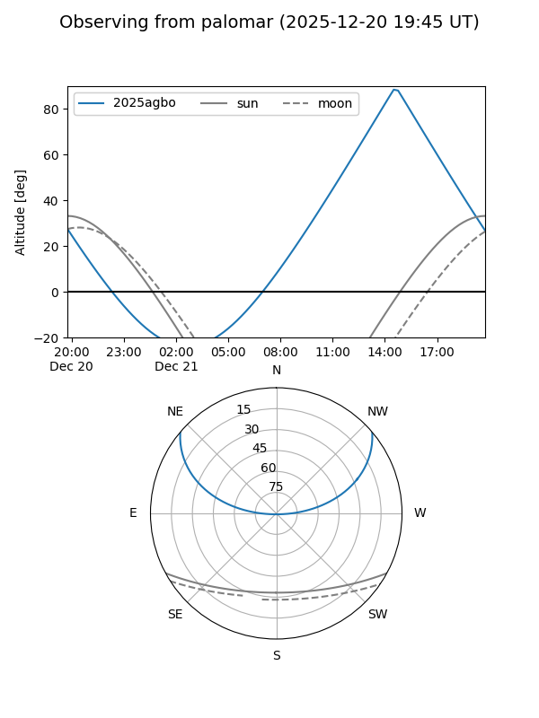
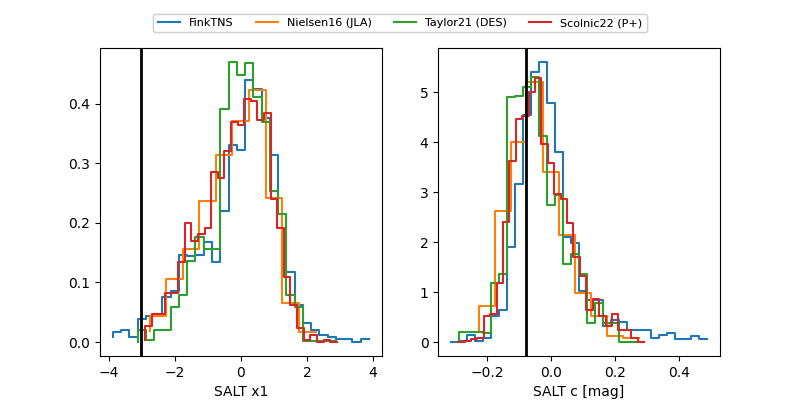

2025agbo
Target 2025agbo at 2025-12-18 14:12
Aliases and brokers:
FINK: fink-portal.org/ZTF25acgmtya
Lasair: lasair-ztf.lsst.ac.uk/objects/ZTF25acgmtya
ALeRCE: alerce.online/object/ZTF25acgmtya
TNS: wis-tns.org/object/2025agbo
YSE: ziggy.ucolick.org/yse/transient_detail/2025agbo
alt names
ZTF25acgmtya (ztf,fink_ztf)
2025agbo (tns,yse)
Coordinates:
equatorial (ra, dec) = 192.4411,+32.82352
equatorial (HMS+DMS) = 12:49:45.86,+32:49:24.68
galactic (l, b) = (126.4700,+84.29323)
Photometry
last ztfg=19.80, ztfr=19.83
5 ztfg, 2 ztfr detections
Lightcurve

Visibility


Additional plots
